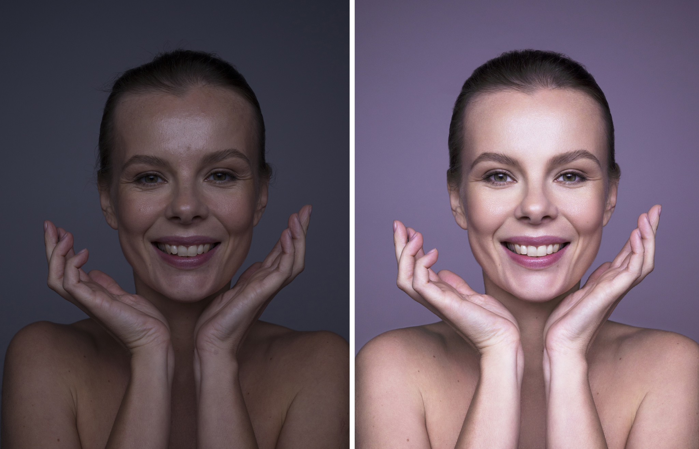
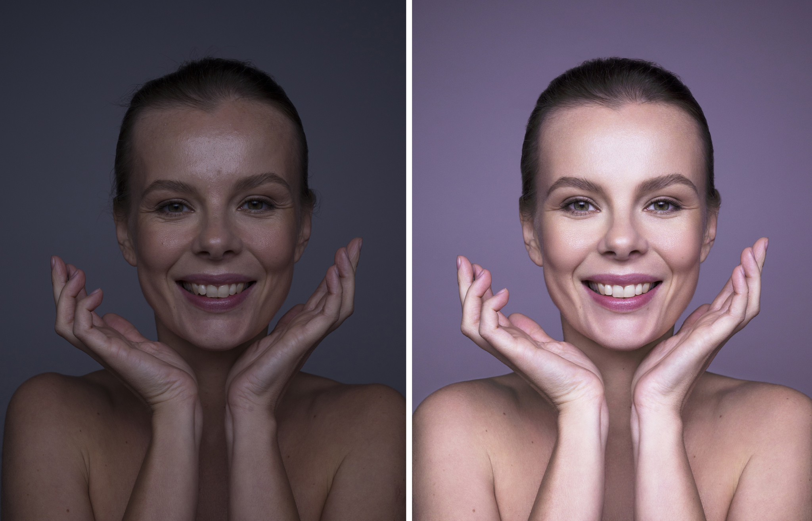

Сайт для цветокррекции
Добро пожаловать на сайт цветокоррекции!
Что мы предлагаем: Наш сайт предоставляет удобные и точные инструменты для коррекции цвета изображений. С помощью интуитивно понятного интерфейса вы сможете:
 Улучшать цвета и создавать нужное настроение в изображениях. Вносить коррективы для устранения цветовых дисбалансов. Использовать предварительные настройки и фильтры для быстрого редактирования. Почему цветокоррекция важна? Цвет — это один из самых мощных визуальных инструментов, который помогает передавать эмоции и настроение. С правильной цветокоррекцией ваши изображения смогут заиграть новыми красками и привлечь внимание зрителей. Наши инструменты разработаны для того, чтобы каждый, от новичка до профессионала, мог создать идеальный образ с минимальными усилиями.
Начните сейчас
Перейдите на страницу цветокорректора, загрузите изображение, выберите необходимые параметры, и сайт поможет вам сделать цветокоррекцию в несколько кликов.
Готовы увидеть мир по-новому?
Что мы предлагаем: Наш сайт предоставляет удобные и точные инструменты для коррекции цвета изображений. С помощью интуитивно понятного интерфейса вы сможете:
 Улучшать цвета и создавать нужное настроение в изображениях. Вносить коррективы для устранения цветовых дисбалансов. Использовать предварительные настройки и фильтры для быстрого редактирования. Почему цветокоррекция важна? Цвет — это один из самых мощных визуальных инструментов, который помогает передавать эмоции и настроение. С правильной цветокоррекцией ваши изображения смогут заиграть новыми красками и привлечь внимание зрителей. Наши инструменты разработаны для того, чтобы каждый, от новичка до профессионала, мог создать идеальный образ с минимальными усилиями.
Начните сейчас
Перейдите на страницу цветокорректора, загрузите изображение, выберите необходимые параметры, и сайт поможет вам сделать цветокоррекцию в несколько кликов.
Готовы увидеть мир по-новому?